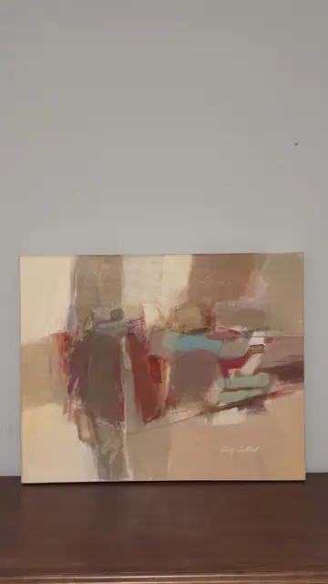
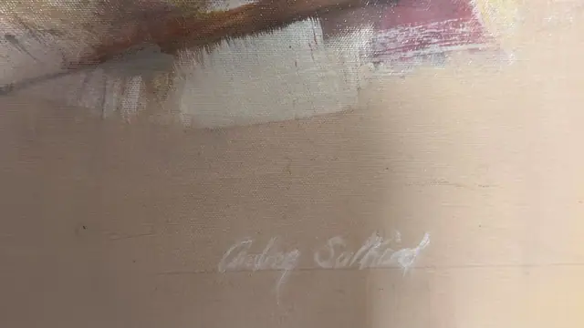
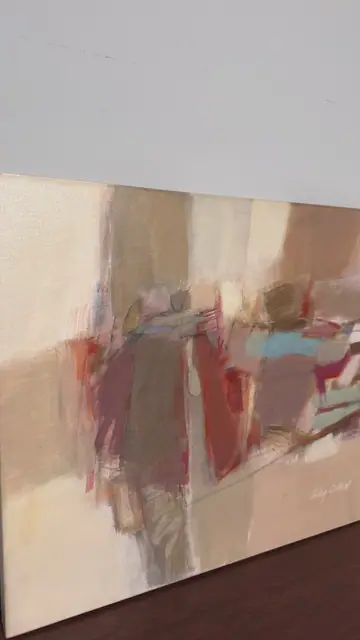
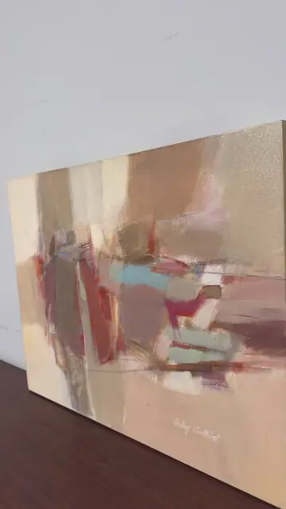

Paintings & Prints
Abstract Composition in Sand and Crimson, Signed, Unframed
· late 20th to early 21st century
Price Upon Request




About the Item
A wide unframed canvas worked in creamy sand, buff and pale apricot, across the middle of which runs a horizontal band of stacked shapes in crimson, olive-brown, mauve and grey. Small accents of turquoise and a hot pink stripe punctuate the cluster, and a long pale diagonal sweeps out to the lower right, giving the whole a landscape-like horizon without describing anything. The paint is brushed thinly and blended wet-into-wet, with the canvas weave showing through the lighter passages, and the upper half is left almost empty as breathing space. The painted image continues over the stretcher edges, so it hangs as-is without a frame. Medium: oil on canvas. Signed lower right of the canvas, in white paint, reading "Audrey Salkind". Condition: No tears, dents or flaking visible; light reflected glare across the surface in every shot. Edges of the stretched canvas look clean.
Details
- Creation Year:
- late 20th to early 21st century
- Dimensions:
- Height: 24.5 in (62.23 cm)
Width: 30.25 in (76.84 cm)
canvas - Medium:
- oil on canvas
- Period:
- 21St
- Condition:
- Offered in the condition shown in the photographs.
- Reference Number:
- VO-142
- Documentation:
- no certificate photographed